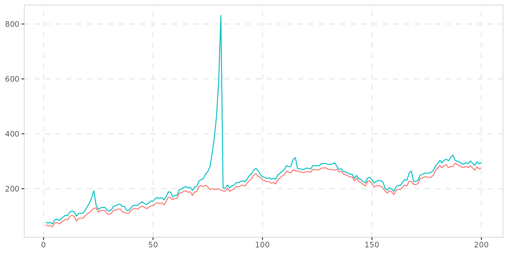
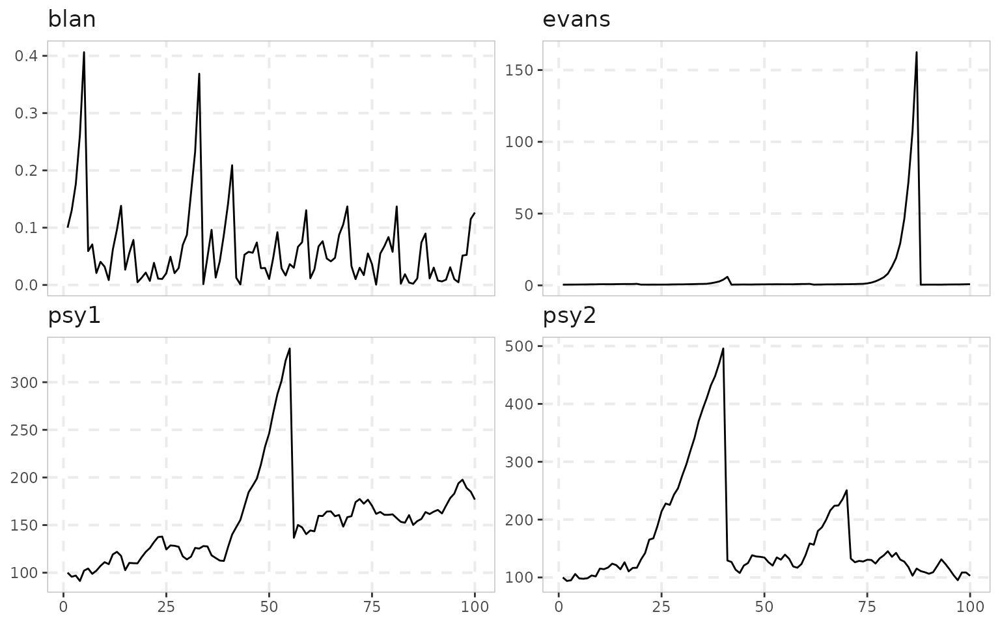
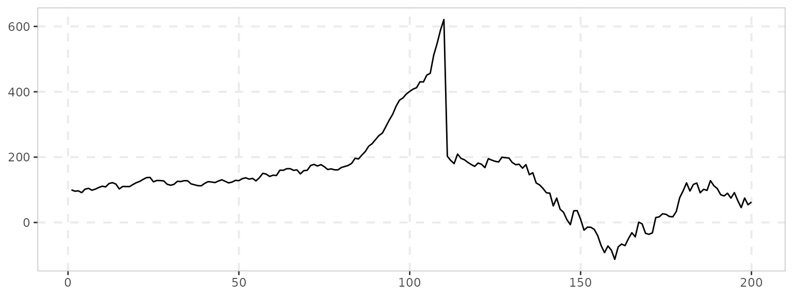

What the sim_*() family is for
Every test in the package is calibrated and validated on simulated data, and the same data-generating processes are exported so you can do the same: check size under a null you choose, check power against a bubble you choose, or just see what a given test does to a series whose true break dates you know. There are three kinds:
| Kind | Functions | Returns |
|---|---|---|
| Bubble processes |
sim_psy1(), sim_psy2(),
sim_ps1(), sim_blan(),
sim_evans(), sim_div(),
sim_tree(), sim_mar(),
sim_msbubble(), sim_falsebubble()
|
One series (class "sim", plots with
autoplot()) |
| Innovation generators |
sim_innov(), sim_vol_garch(),
sim_vol_break(), sim_vol_cir(),
sim_vol_sv(), sim_fi()
|
One series of shocks, to feed into a bubble process through its
e argument |
| Multi-series processes |
sim_common(), sim_coexplosive()
|
A data.frame, one column per series |
Plus sim_data/sim_data_wdate, a bundled
data.frame of five of the classic series (with and without
a date column) used throughout the examples.
Every function takes a seed argument, so a series is
reproducible without a surrounding set.seed(), and the
bubble processes take the break dates (te, tf,
…) as arguments, so the truth you are testing against is explicit.
The bubble processes split into two families.
sim_psy1()/sim_psy2()/ sim_ps1()
are the regime DGPs of Phillips, Shi & Yu (2015) and
Phillips & Shi (2018): a unit root, then an explosive AR(1) between
fixed dates, then a collapse and a return to a unit root – the design
every paper in this literature uses for size and power.
sim_blan(), sim_evans(),
sim_tree(), sim_mar() and
sim_msbubble() are rational bubble models: the
explosive behaviour and its collapse are stochastic, driven by a
probability of bursting each period rather than by fixed dates.
sim_evans()’s periodically collapsing bubble is the one
PSY’s GSADF test was designed to catch, and the one the earlier tests it
replaced could not.
The PSY experiment
PSY validate the GSADF test on a price built from Lucas-model
fundamentals plus an Evans (1991) bubble. sim_div() gives
the fundamental price from a random walk with drift in dividends (West
1988’s S&P 500 parameterisation by default),
sim_evans() gives the bubble term, and a scaling factor
kappa sets how much of the price the bubble accounts
for:
n <- 200
pf <- sim_div(n, seed = 1) # fundamental price
pb <- sim_evans(n, seed = 3) # periodically collapsing bubble
p <- pf + 20 * pb # kappa = 20
data.frame(index = seq_len(n), fundamental = pf, price = p) %>%
tidyr::pivot_longer(-index) %>%
ggplot(aes(index, value, color = name)) +
geom_line() +
labs(y = NULL, x = NULL, color = NULL) +
theme_exuber()
The point of the exercise is that radf() finds the
episodes:
cv <- radf_mc_cv(n, seed = 1)
datestamp(radf(p), cv)
#>
#> ── Datestamp (min_duration = 0) ───────────────────────────────── Monte Carlo ──
#>
#> series1 :
#> Start Peak End Duration Signal Ongoing
#> 1 75 81 82 7 positive FALSEPlotting a simulated series
Each series has an autoplot() method:

Several at once go into a data.frame – which is also
exactly what radf() takes, so the same object serves
both:
sims <- data.frame(
psy1 = sim_psy1(100, seed = 1),
psy2 = sim_psy2(100, seed = 2),
evans = sim_evans(100, seed = 3),
blan = sim_blan(100, seed = 4)
)
sims %>%
dplyr::mutate(dplyr::across(dplyr::everything(), as.numeric), index = dplyr::row_number()) %>%
tidyr::pivot_longer(-index, names_to = "id") %>%
ggplot(aes(index, value)) +
geom_line() +
facet_wrap(~id, scales = "free_y") +
theme_exuber()
Swapping the innovations
By default the regime DGPs are driven by i.i.d. Gaussian shocks.
Every bubble process accepts a vector of innovations through
e instead, and the innovation generators exist to fill it:
heavy-tailed or skewed marginals (sim_innov()), conditional
heteroskedasticity (sim_vol_garch()), a one-off variance
break (sim_vol_break()), stochastic volatility
(sim_vol_cir(), sim_vol_sv()) or long memory
(sim_fi()). The bubble dates stay where you put them; only
the noise changes – which is how the volatility-robust tests in
vignette("volatility-robust-radf") are compared against
plain radf() on an equal footing:
# Same bubble, same seed, volatility tripling half-way through the sample
sim_psy1(n = 200, seed = 1, e = sim_vol_break(199, seed = 1)) %>%
autoplot()
The innovation vector is one shorter than n because the
first observation is the starting value, not a shock.
Multi-series processes
sim_common() draws n_series series that
share one latent bubble plus idiosyncratic noise, the design behind the
panel test radf_common(); sim_coexplosive()
draws a pair where y is a linear function of a (possibly
lagged) explosive x, the design behind
cobubble_test() and contagion_reg() (see
vignette("co-explosivity")):
head(sim_common(n_series = 3, n = 100, seed = 1))
#> series_1 series_2 series_3
#> 1 63.51506 156.4806 53.64832
#> 2 60.82614 150.0373 51.29328
#> 3 61.68536 151.9221 52.08866
#> 4 57.95947 143.0566 48.83047
#> 5 65.01851 160.0944 54.52820
#> 6 66.25556 163.4051 55.81010
head(sim_coexplosive(n = 100, lag = 2, seed = 1))
#> x y
#> 1 100.00000 NA
#> 2 95.74638 NA
#> 3 96.99332 100.28597
#> 4 91.31940 89.56122
#> 5 102.15136 98.06633
#> 6 104.38871 86.87477Which to reach for
- Size or power of a test against a bubble with known
dates:
sim_psy1()(one episode),sim_psy2()(two),sim_ps1()(one, with a distinct collapse regime – the design thedating_*()estimators assume). - A rational, stochastically collapsing bubble:
sim_evans()on its own or on top ofsim_div()fundamentals, as in PSY;sim_blan()for the Blanchard version;sim_tree(),sim_mar(),sim_msbubble()for the newer ones. - A null that looks like a bubble but isn’t:
sim_falsebubble(). - Non-Gaussian or heteroskedastic shocks under any of
the above: build the shocks with an innovation generator and pass them
as
e. -
Several series:
sim_common()for a shared bubble,sim_coexplosive()for a linked pair, or adata.frameof independent draws.